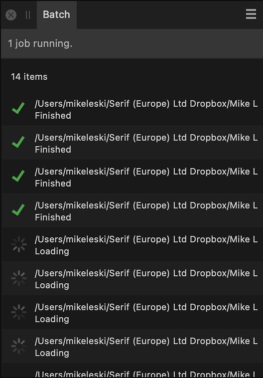

The Batch panel lists all images that are currently being processed as part of a batch job. The panel can be accessed via the top menu's File>New Batch Job option, but has no use outside of previewing the progress of a batch job.
